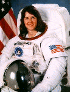

Lyndon B. Johnson Space Center
Houston, Texas 77058
|
National Aeronautics and Space Administration Lyndon B. Johnson Space Center Houston, Texas 77058 |
 |
Biographical Data |
||
Kathryn C. Thornton (Ph.D.)
NASA Astronaut
PERSONAL DATA: Born August 17, 1952, in Montgomery, Alabama. Married to Stephen T. Thornton, Ph.D., of Oak Ridge, Tennessee. She has two stepsons and three daughters. She enjoys scuba diving and skiing. Her parents, Mr. William C. Cordell and Mrs. Elsie Cordell, are deceased. His mother, Mrs. Helen Lee Gardner, and his father, Mr. Barton Brown Thornton, are deceased.
EDUCATION: Graduated from Sidney Lanier High School, Montgomery, Alabama, in 1970; received a bachelor of science degree in physics from Auburn University in 1974, a master of science degree in physics from the University of Virginia in 1977, and a doctorate of philosophy in physics from the University of Virginia in 1979.
ORGANIZATIONS: Member of the American Physical Society, American Association for the Advancement of Science, Sigma Xi, Phi Kappa Phi, and Sigma Pi Sigma.
EXPERIENCE: After Dr. Thornton earned her Ph.D. at the University of Virginia in 1979, she was awarded a NATO Postdoctoral Fellowship to continue her research at the Max Planck Institute for Nuclear Physics in Heidelberg, West Germany. In 1980, she returned to Charlottesville, Virginia, where she was employed as a physicist at the U.S. Army Foreign Science and Technology Center.
NASA EXPERIENCE: Selected by NASA in May 1984, Dr. Thornton became an astronaut in July 1985. Her technical assignments have included flight software verification in the Shuttle Avionics Integration Laboratory (SAIL), serving as a team member of the Vehicle Integration Test Team (VITT) at KSC, and as a spacecraft communicator (CAPCOM). A veteran of three space flights, Dr. Thornton flew on STS-33 in 1989, STS-49 in 1992, and STS-61 in 1993. She has logged over 975 hours in space, including more than 21 hours of extravehicular activity (EVA).
Dr. Thornton was a mission specialist on the crew of STS-33 which launched at night from Kennedy Space Center, Florida, on November 22, 1989, aboard the Space Shuttle Discovery. The mission carried Department of Defense payloads and other secondary payloads. After 79 orbits of the Earth, this five-day mission concluded on November 27, 1989, at Edwards Air Force Base, California.
On her second flight, Dr. Thornton served on the crew of STS-49, May 7-16, 1992, on board the maiden flight of the new Space Shuttle Endeavour. During the mission the crew conducted the initial test flight of Endeavour, performed a record four EVA's (space walks) to retrieve, repair and deploy the International Telecommunications Satellite (INTELSAT), and to demonstrate and evaluate numerous EVA tasks to be used for the assembly of Space Station Freedom. Dr. Thornton was one of two EVA crew members who evaluated Space Station assembly techniques on the fourth EVA. STS-49 logged 213 hours in space and 141 Earth orbits prior to landing at Edwards Air Force Base, California.
On her third flight, Dr. Thornton was a mission specialist EVA crew member aboard the Space Shuttle Endeavour on the STS-61 Hubble Space Telescope (HST) servicing and repair mission. STS-61 launched at night from the Kennedy Space Center, Florida, on December 2, 1993. During the 11-day flight, the HST was captured and restored to full capacity through a record five space walks by four astronauts. After having travelled 4,433,772 miles in 163 orbits of the Earth, the crew of Endeavour returned to a night landing at the Kennedy Space Center on December 13, 1993.
From October 20 to November 5, 1995, Dr. Thornton served aboard Space Shuttle Columbia on STS-73, as the payload commander of the second United States Microgravity Laboratory mission. The mission focused on materials science, biotechnology, combustion science, the physics of fluids, and numerous scientific experiments housed in the pressurized Spacelab module. In completing her fourth space flight, Dr. Thornton orbited the Earth 256 times, traveled over 6 million miles, and logged a total of 15 days, 21 hours, 52 minutes and 21 seconds in space.
Dr. Thornton has announced she will leave NASA on August 1, 1996, to join the faculty of the University of Virginia.
JUNE 1996
{kind=link}